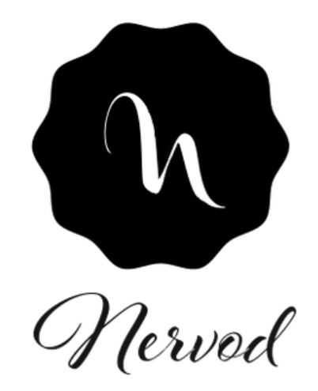

<nav class="navbar navbar-expand-md bg-info navbar-dark fixed-top">
    
    <a class="navbar-brand" ><h1>MyKin</h1><h4>Social Family</h4></a>
    <button class="navbar-toggler" type="button" data-toggle="collapse" data-target="#navbarCollapse" aria-controls="navbarCollapse"
      aria-expanded="false" aria-label="Toggle navigation">
      <span class="navbar-toggler-icon"></span>
    </button>
    <div class="collapse navbar-collapse" id="navbarCollapse">
      <ul class="navbar-nav mr-auto">
  
        <li class="nav-item">
          <a class="nav-link text-dark" routerLink="/home">Home</a>
        </li>
        <li class="nav-item">
          <a class="nav-link text-dark" routerLink="/contact-list">Contacts</a>
        </li>
        <li class="nav-item">
          <a class="nav-link text-dark" routerLink="/contact-create">Discussions</a>
        </li>
        <li class="nav-item">
          <a class="nav-link text-dark" routerLink="/contact-create">Messages</a>
        </li>
  
      </ul>
    </div>
  </nav>
  
